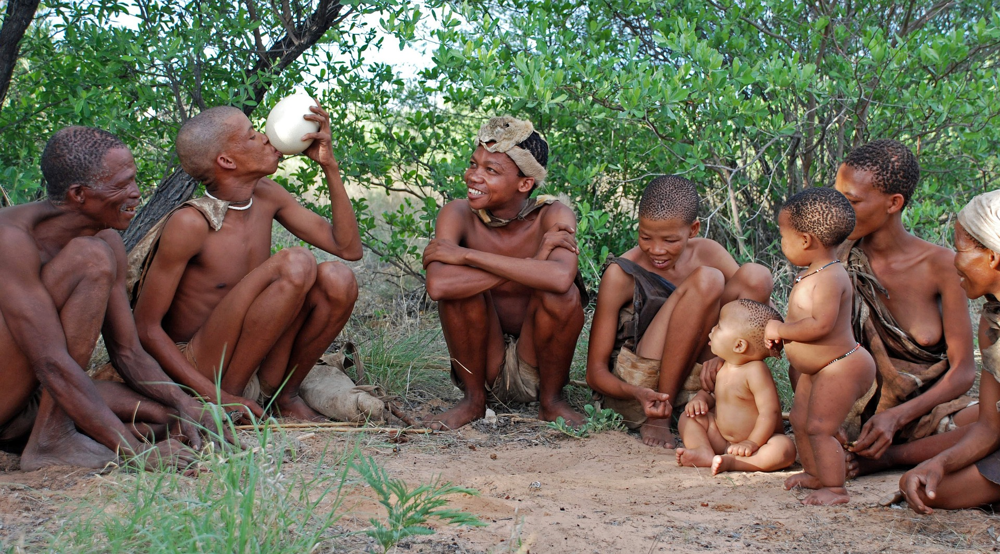

Zona Intangible(Untouchable Zone)
The government set up the
Zona Intangible in 2007 as an area where extractive acitivites, including oil, are prohibited to protect the territory of indigenous people.
There are plans for at least
3 more drilling platforms deeper into Yasuni National Park, which would bring oil activity close to the buffer zone of an area known as the
Zona Intangible, or Untouchable Zone.
Almost two years later, on 25 January 2022, Monitoring the Andean Amazon Project (MAAP) again warned of the expansion of the road within a few hundred metres of the protected “Intangible Zone” of the Tagaeri and Taromenane indigenous peoples."
The platform, which is the most recent construction within the ITT Block, is located only 300 metres from the Intangible Zone buffer zone. We also warn of future construction that could enter the buffer zone and reach the boundary of the
Intangible Zone itself,” says a report published on the MAAP website. Then in May, President Lenín Moreno signed a new decree that allows oil platforms to be constructed within the Intangible Zone’s buffer area, which was previously forbidden.